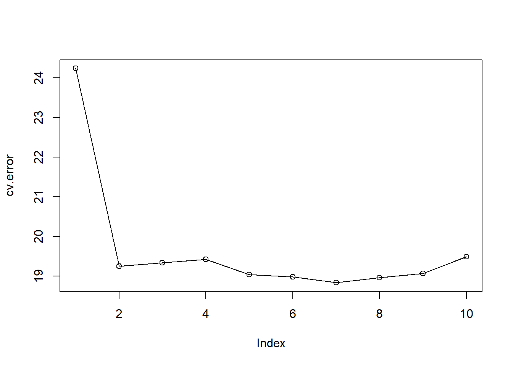
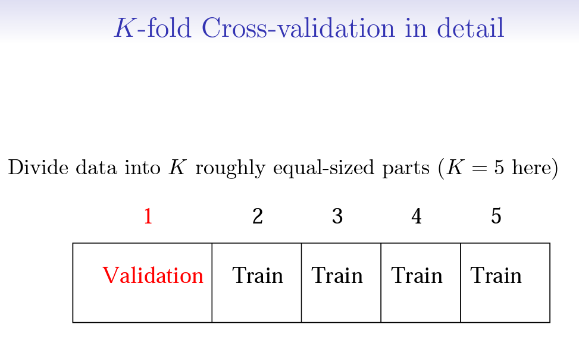
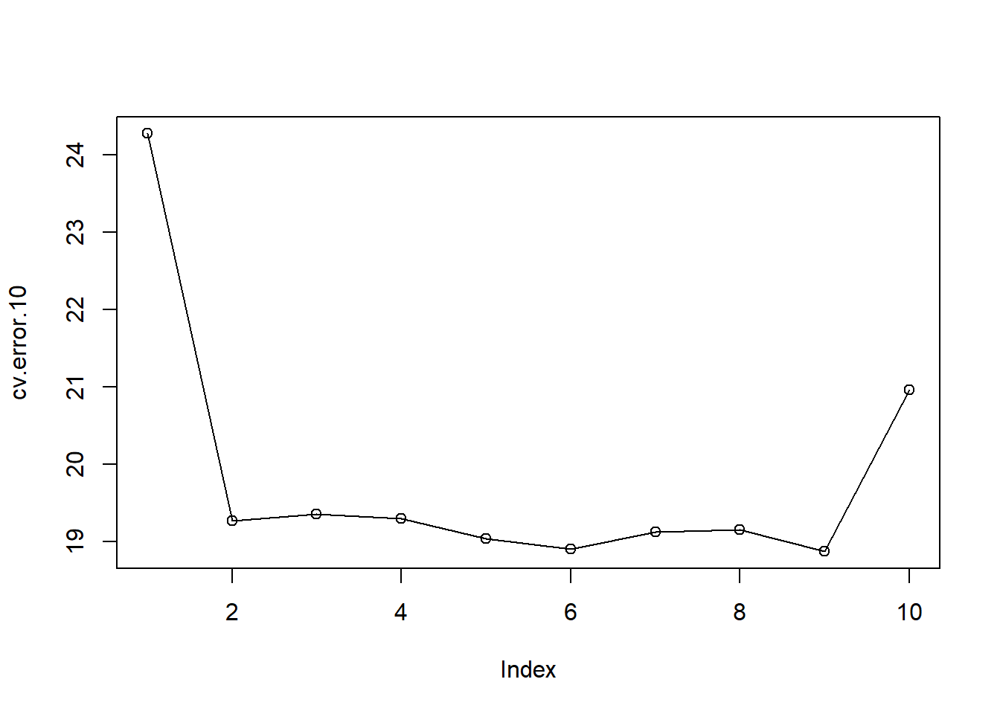

library(ISLR2)
set.seed(1)
train <- sample(392, 196)5 Lab5 Remuestreo
| Tipo | |
|---|---|
| Slides: | https://hastie.su.domains/ISLR2/Slides/Ch5_Resampling_Methods.pdf |
| Lab-html: | https://hastie.su.domains/ISLR2/Labs/Rmarkdown_Notebooks/Ch5-resample-lab.html |
| Lab-Rscript: | https://hastie.su.domains/ISLR2/Labs/R_Labs/Ch5-resample-lab.R |
| Data: | Auto (ISLR2) |
En esta práctica exploramos las técnicas de remuestreo: Cross-Validation (validación cruzada) y Bootstrap.
Nota: Es posible que algunas de las funciones de esta práctica tarden un poco en ejecutarse en su computadora.
5.1 El enfoque del conjunto de validación
Exploramos el uso del enfoque del conjunto de datos de validación/test/prueba para estimar las tasas de error de validación/test/prueba que resultan del ajuste de varios modelos lineales en el conjunto de datos Auto.
Es importante mencionar el uso de la función set.seed() para establecer un generador de números aleatorios en R, de modo que el lector pueda obtener exactamente los mismos resultados que los que se muestran a continuación: reproducibilidad (véase el anexo Herramientas).
Empezamos usando la función sample() (véase el anexo Herramientas) para dividir el conjunto de observaciones en dos mitades, seleccionando un subconjunto aleatorio de 196 observaciones de las 392 observaciones originales de Auto. Nos referimos a estas observaciones como el conjunto de entrenamiento.
Nota Víctor: La función
sample()admite como primer valor un entero positivo, en cuyo caso genera 1:valor. Aquí al poner 392 ha generado el vector 1:392. Y de ese vector ha seleccionado aleatoriamente (sin reemplazamiento) 196 valores.
Aplicamos lm() para ajustar una regresión lineal tomando solo las observaciones correspondientes al conjunto de entrenamiento, utilizando el argumento subset:
lm.fit <- lm(mpg ~ horsepower, data = Auto, subset = train)Con la función predict() estimamos la respuesta para todas las observaciones, las 392, y con mean() calculamos el MSE de las 196 observaciones del conjunto de validación (obtenido utilizando el índice -train que selecciona solo las observaciones que no están en el conjunto de entrenamiento).
mean((Auto$mpg - predict(lm.fit, Auto))[-train]^2)[1] 23.26601Por lo tanto, el MSE estimado con el conjunto de validación para el ajuste de regresión lineal es de 23.27.
Podemos usar la función poly() (véase el anexo Herramientas) para estimar el error de validación para las regresiones cuadrática y cúbica.
lm.fit2 <- lm(mpg ~ poly(horsepower, 2), data = Auto,
subset = train)
mean((Auto$mpg - predict(lm.fit2, Auto))[-train]^2)[1] 18.71646lm.fit3 <- lm(mpg ~ poly(horsepower, 3), data = Auto,
subset = train)
mean((Auto$mpg - predict(lm.fit3, Auto))[-train]^2)[1] 18.79401Estas tasas de error son 18.72 y 18.79, respectivamente.
Si elegimos un conjunto de entrenamiento diferente, obtendremos errores algo diferentes en el conjunto de validación.
set.seed(2)
train <- sample(392, 196)
lm.fit <- lm(mpg ~ horsepower, data = Auto, subset = train)
mean((Auto$mpg - predict(lm.fit, Auto))[-train]^2)[1] 25.72651lm.fit2 <-
lm(mpg ~ poly(horsepower, 2), data = Auto, subset = train)
mean((Auto$mpg - predict(lm.fit2, Auto))[-train]^2)[1] 20.43036lm.fit3 <-
lm(mpg ~ poly(horsepower, 3), data = Auto, subset = train)
mean((Auto$mpg - predict(lm.fit3, Auto))[-train]^2)[1] 20.38533Usando esta nueva división (por la diferente semilla) de las observaciones en los conjuntos de entrenamiento y validación, encontramos que las tasas de error del conjunto de validación para los modelos con términos lineales, cuadráticos y cúbicos son 25.73, 20.43 y 20.39, respectivamente.
Estos resultados son consistentes con nuestros hallazgos previos: un modelo que predice mpg usando una función cuadrática de horsepower funciona mejor que un modelo que involucra solo una función lineal de horsepower, y hay poca evidencia a favor de un modelo que utiliza una función cúbica de horsepower.
5.2 Validación cruzada (Cross Validation, CV)
5.2.1 Leave-One-Out CV
La estimación LOOCV (validación cruzada dejando uno fuera) se puede calcular automáticamente para cualquier modelo lineal generalizado utilizando las funciones glm() y cv.glm().
En la práctica del Capítulo 4, usamos la función glm() para realizar una regresión logística pasando el argumento family = "binomial". Si a glm() no se le pasa el argumento family, entonces realiza una regresión lineal, al igual que la función lm():
glm.fit <- glm(mpg ~ horsepower, data = Auto)
lm.fit <- lm(mpg ~ horsepower, data = Auto)
coef(glm.fit)(Intercept) horsepower
39.9358610 -0.1578447 coef(lm.fit)(Intercept) horsepower
39.9358610 -0.1578447 producen modelos de regresión lineal idénticos.
En esta práctica, realizaremos una regresión lineal utilizando la función glm() en lugar de la función lm() porque la primera se puede usar junto con cv.glm() (del paquete boot).
library(boot)
glm.fit <- glm(mpg ~ horsepower, data = Auto)
cv.err <- cv.glm(Auto, glm.fit)
cv.err$delta[1] 24.23151 24.23114La función cv.glm() realiza por defecto la estimación LOOCV y produce una lista con varios componentes. Los dos números en el vector delta contienen los resultados de la validación cruzada: el error del conjunto de validación. En este caso los números son idénticos 24.23 (hasta dos decimales) y corresponden al estadístico LOOCV dado en la ecuación (5.1) del libro.
Se puede repetir este procedimiento para ajustes polinómicos cada vez más complejos. Para automatizar el proceso, usamos la función for() para iniciar una regresión polinomial que ajusta de forma iterativa (bucle) polinomios de orden \(i=1\) a \(i=10\), calcula el error de validación cruzada asociado y lo almacena en el \(i\)-ésimo elemento del vector cv.error. Comenzamos inicializando el vector (asignándole ceros).
cv.error <- rep(0, 10)
for (i in 1:10) {
glm.fit <- glm(mpg ~ poly(horsepower, i), data = Auto)
cv.error[i] <- cv.glm(Auto, glm.fit)$delta[1]
}
cv.error [1] 24.23151 19.24821 19.33498 19.42443 19.03321 18.97864 18.83305 18.96115
[9] 19.06863 19.49093plot(cv.error, type = "o")
Con el plot() se reproduce la Figura 5.4 izquierda del libro, pero con otra escala. En ella se ve una fuerte caída en el MSE estimado con el conjunto de validación entre los ajustes lineal y cuadrático, pero luego no hay una mejora clara al usar polinomios de orden superior.
5.2.2 \(k\)-fold CV
La función cv.glm() también se puede usar para implementar \(k\)-fold CV.
Nota Víctor: Es útil traer aquí la imagen que aparece en las slides del material original:

A continuación usamos \(k=10\), que es una opción común para \(k\), en el conjunto de datos Auto.
Una vez más establecemos una semilla aleatoria e inicializamos un vector en el que almacenaremos los errores de CV correspondientes a los ajustes polinómicos de los órdenes uno a diez.
set.seed(17)
cv.error.10 <- rep(0, 10)
for (i in 1:10) {
glm.fit <- glm(mpg ~ poly(horsepower, i), data = Auto)
cv.error.10[i] <- cv.glm(Auto, glm.fit, K = 10)$delta[1]
}
cv.error.10 [1] 24.27207 19.26909 19.34805 19.29496 19.03198 18.89781 19.12061 19.14666
[9] 18.87013 20.95520plot(cv.error.10, type = "o")
Detalle técnico: Nótese que el tiempo de cálculo es más corto que el de LOOCV. (En principio, el tiempo de cálculo de LOOCV para un modelo lineal de mínimos cuadrados debería ser más rápido que para \(k\)-fold CV, debido a la disponibilidad de la fórmula (5.2) para LOOCV; sin embargo, lamentablemente la función cv.glm() no hace uso de esta fórmula).
Todavía se ve poca evidencia de que el uso de términos polinómicos cúbicos o de orden superior conduzca a un error del conjunto de validación menor que simplemente usar un ajuste cuadrático.
En la Sección 5.3.2 se ve que los dos números asociados con delta son esencialmente los mismos cuando se ejecuta LOOCV. Cuando, en cambio, realizamos \(k\)-fold CV, entonces los dos números asociados con delta difieren ligeramente. El primero es la estimación estándar de \(k\)-fold CV, como en (5.3). El segundo es una versión con corrección de sesgo. En este conjunto de datos, las dos estimaciones son muy similares entre sí.
5.3 Bootstrap
Ilustramos el uso de bootstrap en 1 ejemplo que involucra la estimación de la precisión del modelo de regresión lineal en el conjunto de datos Auto. (En el material original hay otro ejemplo relacionado con la Sección 5.2, que aquí se omite por la falta de tiempo)
Una de las grandes ventajas del enfoque bootstrap es que se puede aplicar en casi todas las situaciones. No se requieren cálculos matemáticos complicados. Realizar un análisis bootstrap en R implica solo dos pasos.
- Primero, debemos crear una función que calcule el estadístico de interés (véase el anexo Herramientas para la creación de funciones)
- En segundo lugar, usamos la función
boot(), del paqueteboot, para realizar el bootstrap mediante el muestreo aleatorio repetido con reemplazamiento de observaciones del conjunto de datos.
5.3.1 Estimación de la precisión de un estadístico de interés (omitido)
5.3.2 Estimación de la precisión de un modelo de regresión lineal
El enfoque bootstrap se utiliza aquí para evaluar la variabilidad de los coeficientes estimados y predicciones a partir de un método de aprendizaje estadístico, concretamente de las estimaciones para \(\beta_0\) y \(\beta_1\), los términos de intersección y pendiente para el modelo de regresión lineal que utiliza horsepower para predecir mpg en el conjunto de datos Auto. Compararemos las estimaciones obtenidas usando el bootstrap con las obtenidas usando las fórmulas para \(\textrm{SE}(\hat{\beta}_0)\) y \(\textrm{SE}(\hat{\beta}_1)\) descritas en la Sección 3.1.2.
Primero creamos una función simple, boot.fn(), que toma el conjunto de datos Auto así como un conjunto de índices para las observaciones, y devuelve las estimaciones de intersección y pendiente para el modelo de regresión lineal. Luego aplicamos esta función al conjunto completo de 392 observaciones para calcular las estimaciones de \(\beta_0\) y \(\beta_1\) en todo el conjunto de datos utilizando las estimaciones habituales de coeficientes de regresión lineal (fórmulas del Capítulo 3 del libro).
boot.fn <- function(data, index)
coef(lm(mpg ~ horsepower, data = data, subset = index))
boot.fn(Auto, 1:392)(Intercept) horsepower
39.9358610 -0.1578447 La función boot.fn() también se puede usar para crear estimaciones bootstrap para los términos de intersección y pendiente mediante muestreo aleatorio repetido con reemplazo de entre las observaciones. Aquí damos dos ejemplos.
set.seed(1)
boot.fn(Auto, sample(392, 392, replace = T))(Intercept) horsepower
40.3404517 -0.1634868 boot.fn(Auto, sample(392, 392, replace = T))(Intercept) horsepower
40.1186906 -0.1577063 A continuación, usamos la función boot() para calcular los errores estándar de 1000 estimaciones bootstrap para los términos de intersección y pendiente.
boot(Auto, boot.fn, 1000)
ORDINARY NONPARAMETRIC BOOTSTRAP
Call:
boot(data = Auto, statistic = boot.fn, R = 1000)
Bootstrap Statistics :
original bias std. error
t1* 39.9358610 0.0544513229 0.841289790
t2* -0.1578447 -0.0006170901 0.007343073El resultado es que la estimación bootstrap para \(\textrm{SE}(\hat{\beta}_0)\) es 0.84, y que la estimación bootstrap para \(\textrm{SE}(\hat{\beta}_1)\) es 0.0073.
Con la función summary() se obtienen las estimaciones de los errores estándar de los coeficientes de regresión en un modelo lineal: \(\hat{\beta}_0\) y \(\hat{\beta}_1\) obtenidas usando las fórmulas de la Sección 3.1.2.
summary(lm(mpg ~ horsepower, data = Auto))$coef Estimate Std. Error t value Pr(>|t|)
(Intercept) 39.9358610 0.717498656 55.65984 1.220362e-187
horsepower -0.1578447 0.006445501 -24.48914 7.031989e-81Éstas son 0.717 para la intersección y 0.0064 para la pendiente. Curiosamente, estas son algo diferentes de las estimaciones obtenidas utilizando el bootstrap. ¿Esto indica un problema con el bootstrap? No, ¡De hecho, sugiere lo contrario! Las fórmulas dadas en la Ecuación 3.8 se basan en ciertas suposiciones. Por ejemplo, dependen del parámetro desconocido \(\sigma^2\), la varianza del error. Entonces estimamos \(\sigma^2\) usando el RSS. Ahora bien, aunque las fórmulas para los errores estándar no dependen de que el modelo lineal sea correcto, la estimación de \(\sigma^2\) sí lo hace. Vemos en la Figura 3.8 en la página 91 que existe una relación no lineal en los datos, por lo que los residuos de un ajuste lineal se inflarán, al igual que \(\hat{\sigma}^2\). En segundo lugar, las fórmulas estándar asumen (algo poco realista) que los \(x_i\) son fijos, y toda la variabilidad proviene de la variación en los errores \(\epsilon_i\). El enfoque bootstrap no se basa en ninguna de estas suposiciones, por lo que es probable que brinde una estimación más precisa de los errores estándar de \(\hat{\beta}_0\) y \(\hat{\beta}_1\) que la función summary().
A continuación, calculamos las estimaciones del error estándar de bootstrap y las estimaciones de regresión lineal estándar que resultan de ajustar el modelo cuadrático a los datos. Dado que este modelo proporciona un buen ajuste a los datos (Figura 3.8), ahora existe una mejor correspondencia entre las estimaciones bootstrap y las estimaciones estándar de \(\textrm{SE}(\hat{\beta}_0)\), \(\textrm{SE}(\hat{\beta}_1)\) y \(\textrm{SE} (\hat{\beta}_2)\).
ES necesario redefinir la función boot.fn():
boot.fn <- function(data, index)
coef(lm(
mpg ~ horsepower + I(horsepower^2),
data = data,
subset = index
))
set.seed(1)
boot(Auto, boot.fn, 1000)
ORDINARY NONPARAMETRIC BOOTSTRAP
Call:
boot(data = Auto, statistic = boot.fn, R = 1000)
Bootstrap Statistics :
original bias std. error
t1* 56.900099702 3.511640e-02 2.0300222526
t2* -0.466189630 -7.080834e-04 0.0324241984
t3* 0.001230536 2.840324e-06 0.0001172164summary(lm(mpg ~ horsepower + I(horsepower^2), data = Auto))$coef Estimate Std. Error t value Pr(>|t|)
(Intercept) 56.900099702 1.8004268063 31.60367 1.740911e-109
horsepower -0.466189630 0.0311246171 -14.97816 2.289429e-40
I(horsepower^2) 0.001230536 0.0001220759 10.08009 2.196340e-21